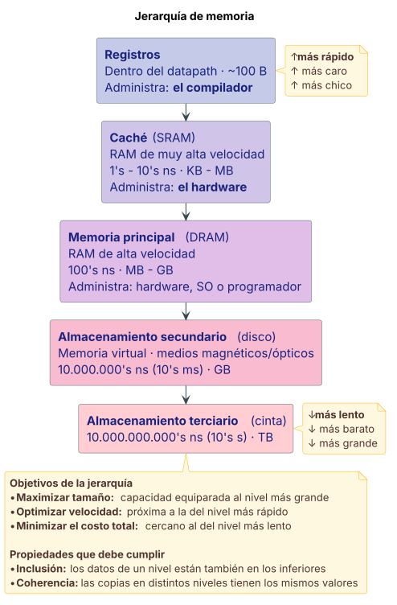
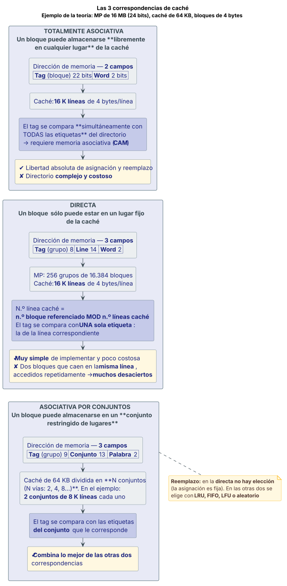

Memoria caché¶
Definición¶
La memoria caché es una memoria pequeña y muy rápida, que se ubica entre la memoria principal y la CPU. Puede localizarse en un chip separado o dentro de la CPU, o en ambos lugares. Contiene algunos sectores (bloques) de la memoria principal.
Es uno de los niveles de la jerarquía de memoria, que a su vez es un método de administración del almacenamiento de la información estructurado en varios niveles ubicados físicamente en distintos lugares, con tecnologías, costos, tamaños y velocidades distintas. De esta manera los programadores "creen" disponer de cantidades casi "ilimitadas" de memoria a un costo accesible, y con velocidades cercanas a las de una memoria "ultrarrápida".
Fuente: Teorías/07 Arq clase7 Memoria.pdf, fil. 9, 16.
Desarrollo¶
Por qué existe la jerarquía de memoria¶
En el diseño de la memoria existe un compromiso entre capacidad, velocidad y costo. Una memoria ideal sería aquella que es infinitamente grande, con un tiempo de acceso sumamente pequeño (casi 0) y un costo relativamente bajo.
Durante años se ha cumplido que:
- La velocidad del procesador aproximadamente se ha duplicado cada 18 meses (casi sin variar su precio), medido en cantidad de instrucciones ejecutadas por segundo.
- Se ha cuadruplicado el tamaño de la memoria cada 36 meses (al mismo precio), pero su velocidad aumenta a razón de un 10 % anual.
- El desbalance entre la velocidad del procesador y la de la memoria ha generado una brecha que ha crecido a lo largo del tiempo.
En el diagrama temporal 1980–2000 que muestra la teoría, la CPU crece al 60 % anual (2× cada 1,5 años) siguiendo la ley de Moore, mientras la DRAM crece al 9 % anual (2× cada 10 años); la separación de rendimiento procesador-memoria crece un 50 % por año.
Para compensar este desbalance sin impactar fuertemente en el costo del subsistema, se implementa la memoria como una organización jerárquica compuesta por varios tipos de dispositivos. En las computadoras actuales los diferentes tipos de memorias actúan coordinadamente y no separadas; esa interacción permite un comportamiento global equivalente al que tendría una memoria única, grande y rápida.
La pirámide de la jerarquía¶
La jerarquía de memoria se puede pensar como una pirámide de múltiples capas o niveles, de diferentes tamaños y velocidades. Niveles principales:
| Nivel | Descripción | Velocidad orientativa | Tamaño orientativo |
|---|---|---|---|
| Registros | Dentro del datapath del procesador | — | ~100 B |
| Caché (on-chip / 2.º nivel, SRAM) | RAM de muy alta velocidad | 1's – 10's ns | KB – MB |
| Memoria principal (DRAM) | RAM de alta velocidad | 100's ns | MB – GB |
| Almacenamiento secundario (disco) | Memoria virtual o secundaria, medios magnéticos/ópticos | 10.000.000's ns (10's ms) | GB |
| Almacenamiento terciario (cinta) | — | 10.000.000.000's ns (10's s) | TB |
A medida que nos alejamos de la CPU, los niveles son más grandes, más lentos y más baratos que los niveles previos (o superiores) en la jerarquía: de ahí la forma de pirámide.
Objetivos principales de una jerarquía de memoria:
- Maximizar tamaño: idealmente disponer de una "capacidad ilimitada", equiparada al tamaño del nivel más grande.
- Optimizar velocidad: simular que se dispone de un banco de memoria "ultrarrápida", próximo a la velocidad del nivel más rápido.
- Minimizar el costo total: implementar una memoria a un costo cercano al del nivel más lento.
Propiedades que debe cumplir para comportarse como una jerarquía integrada:
- Inclusión: los datos almacenados en un nivel han de estar también almacenados en los niveles inferiores a él.
- Coherencia: las copias de la misma información en los distintos niveles deben contener los mismos valores.
Quién administra cada nivel:
| Nivel | Administrado por |
|---|---|
| Registros | El compilador. El programador no interviene, porque en los lenguajes de programación no son visibles (con algunas excepciones) |
| Caché | Por hardware |
| Memoria principal | Hardware, sistema operativo, o el programador (archivos) |
Organización de la caché en bloques¶
- La información contenida en la caché se organiza en bloques (también llamados ranuras) de longitud fija: por ejemplo 8, 16 o 32 bytes.
- En los bloques de la caché se copian algunos bloques de idéntico tamaño de la memoria principal.
- La cantidad de bloques copiados depende del tamaño de la memoria caché y del bloque.
- Cada ranura tiene asociada una etiqueta para identificar el bloque de memoria que tiene copiado.
- El conjunto de etiquetas forma el directorio de la caché.
Funcionamiento: acierto y fallo¶
- Cuando la CPU necesita un dato, genera 1 dirección de memoria.
- La caché "intercepta" esa dirección y determina si tiene ese dato. Pueden ocurrir 2 situaciones:
| ACIERTO (hit) | FALLO (miss) | |
|---|---|---|
| Qué pasa | Se encuentra en la caché el dato solicitado y se lo envía a la CPU a la velocidad de la caché | No se encuentra: se trae el bloque que contiene esa dirección desde la memoria principal, y la caché entrega el dato requerido a la CPU |
| De qué depende la velocidad del acceso | Del tiempo de acceso de la caché (relativamente muy corto) | Del tiempo de acceso de la memoria principal (relativamente largo) |
Los fallos de caché se gestionan mediante hardware y causan que el procesador se detenga hasta que el dato esté disponible. Esta acción requiere un tiempo determinado.
El tiempo para servir un fallo depende de dos parámetros de la memoria principal:
- Latencia: el tiempo necesario para completar un acceso a memoria. Depende de la memoria.
- Ancho de banda: la velocidad a la cual se puede transferir el dato, es decir, la cantidad de información por unidad de tiempo que puede transferirse desde/hacia la memoria. Depende de la velocidad del bus.
En un procesador segmentado
En un procesador con segmentación del cauce se dispone de un ciclo de reloj para el acceso a memoria. Ese tiempo debe ser suficiente para el acceso a la memoria caché. En caso de fallo, el acceso a la memoria principal requiere varios ciclos extra. Ver segmentación de cauce.
Los 2 principios en que se basa la caché¶
La eficiencia del uso de la caché depende de la cantidad de veces que "acierta". Esa tasa de aciertos no necesariamente tiene que ser proporcional al tamaño de la caché —que es miles de veces más chico que el de la memoria principal—. La razón tiene que ver con el comportamiento de los programas, que se apoya en 2 principios de carácter empírico:
- Principio de localidad temporal de las referencias: es altamente probable que los elementos de memoria referenciados recientemente (datos o instrucciones) vuelvan a ser referenciados en el corto tiempo.
- Principio de localidad espacial de las referencias: es altamente probable que los próximos elementos de memoria referenciados estén en las proximidades de los últimos referenciados.
Tiempo de acceso promedio¶
El tiempo de acceso promedio de la CPU es el promedio del tiempo que tarda en obtener los datos buscados en memoria, compuesto por accesos a la caché y accesos a la memoria principal:
tCPU = (1 − TF) × taccesoMC + TF × PF
- TF es la tasa de fallos:
número de fallos / número total de accesos. - PF es la penalización por fallo, es decir el tiempo "gastado" en acceder a la memoria principal (taccesoMP).
Para mejorar las prestaciones hay que reducir taccesoMC, TF y PF.
Consideraciones de diseño de la caché¶
| # | Consideración | Qué hay que tener en cuenta |
|---|---|---|
| 1 | Tamaño de la caché | Debe ser suficientemente grande para contener la mayor cantidad posible de información, pero no demasiado grande porque el tamaño impacta en la velocidad (taccesoMC) y en el costo. |
| 2 | Tamaño del bloque o ranura | Muy importante en la tasa de aciertos. Debe ser suficientemente grande para aprovechar al máximo las referencias cercanas: al aumentar el tamaño mejora la tasa de aciertos hasta un cierto tamaño; después de eso, aumentarlo no mejora. Por otra parte, al aumentar el tamaño del bloque hay menos bloques de la MP en la caché, lo que tiende a aumentar la tasa de fallos y la penalización por fallo —son más palabras a transferir entre MP y caché—. Existe un valor óptimo. |
| 3 | Costo | Crece fuertemente con el tamaño de la memoria, y es significativamente grande cuando la caché está incluida en el chip que contiene el procesador. |
| 4 | Niveles de caché | Puede ser una sola (1 nivel) o estar dividida en varias unidades (múltiples niveles), por lo general con distintos tamaños: el L1 muy pequeño y ultrarrápido, el L2 un poco más grande y lento. |
| 5 | Separación de caché de instrucciones y de operandos | El mecanismo de acceso a las instrucciones es distinto al de los datos, por lo que las estrategias para obtener una alta tasa de aciertos son distintas en cada caso. Es posible mejorar la tasa de aciertos general dividiendo la caché en una de instrucciones y una de datos, con distintas características: distintos tamaños y políticas de acceso y reemplazo. |
Los 4 puntos a definir en el diseño de la caché¶
- Organización: tamaño de la caché, cantidad y tamaño de bloques.
- Política de asignación: el tipo de función de correspondencia entre los bloques de la memoria principal y los bloques o ranuras de la caché.
- Política de reemplazo: los algoritmos para reemplazar bloques en la caché.
- Política de escritura: los mecanismos de escritura en memoria principal.
Políticas de asignación — las 3 correspondencias¶
Las políticas de asignación son las funciones de mapeo que definen la forma en que se van a asignar los bloques de la memoria principal en la memoria caché. Las más empleadas:
- Correspondencia totalmente asociativa: un bloque puede almacenarse libremente en cualquier lugar de la caché.
- Correspondencia directa: un bloque sólo puede estar almacenado en un lugar fijo de la caché.
- Correspondencia asociativa por conjuntos: un bloque puede almacenarse en un conjunto restringido de lugares de la caché.
Campos de la dirección de memoria — 2:
- Tag: el número de bloque en la memoria principal.
- Word: el número de palabra dentro del bloque.
Operación. El tag es comparado simultáneamente con todas las etiquetas de la caché, que identifican qué bloques de la MP están asignados a ella —las etiquetas forman el directorio—. Si la comparación da un acierto, el dato se busca en la caché; si da una falla, el dato se trae de la memoria principal.
Conclusiones:
- Un bloque de MP puede colocarse en cualquier línea de la caché.
- La etiqueta identifica unívocamente un bloque de memoria.
- Todas las etiquetas se examinan para buscar una coincidencia. Para esa búsqueda se requiere una memoria asociativa (CAM, memoria de acceso por contenido) para implementar el directorio.
- La implementación del directorio es compleja y costosa.
- Permite libertad absoluta para la asignación y el reemplazo de bloques.
Campos de la dirección de memoria — 3:
- Tag: el número de grupo en la memoria principal.
- Line: el número de bloque dentro del grupo.
- Word: el número de palabra dentro del bloque.
Operación. El tag es comparado con la etiqueta de la caché correspondiente al número de línea —hay tantas líneas en la caché como bloques por grupo en la MP—. Acierto → el dato se busca en la caché; falla → se trae de la memoria principal.
Conclusiones:
-
Un bloque de MP puede colocarse en una única línea de la caché:
N.º línea caché = N.º bloque referenciado "en módulo" N.º líneas caché
-
La etiqueta sólo contiene el número de grupo de la MP asignado a esa línea.
- Muy simple de implementar y poco costosa.
- Rendimiento aceptable, aunque a veces puede ser malo: por ejemplo, si un programa accede repetidamente a dos bloques distintos de MP que se corresponden con la misma línea, las pérdidas de caché (desaciertos) serán muy grandes.
Campos de la dirección de memoria — 3:
- Tag / grupo
- Conjunto
- Palabra dentro del bloque
Conclusiones:
- Un bloque de MP puede colocarse en bloques determinados de la caché. La caché se divide en un número de conjuntos N (N vías, con N = 2, 4, 8…).
- Cada conjunto contiene un número de líneas o ranuras.
- Un bloque determinado corresponderá a alguna línea o ranura de un conjunto determinado.
- En general, la función asociativa por conjuntos combina lo mejor de las otras dos correspondencias (asociativa y directa).
Políticas de reemplazo¶
Cuando hay un fallo de acceso a la caché se debe traer un bloque desde la memoria principal y almacenarlo en la caché. El lugar donde va a ser ubicado requiere reemplazar un bloque existente. Las distintas estrategias son las políticas de reemplazo de bloque.
En correspondencia directa no hay elección: la asignación de bloques de MP a bloques de la caché es fija. Sólo hay una posible línea para cada bloque, por lo tanto, si se requiere traer un nuevo bloque, indefectiblemente reemplazará el que está usando esa ranura actualmente.
Para las asignaciones asociativa y asociativa por conjuntos hay varios algoritmos. Todos deben implementarse en hardware, por razones de velocidad:
| # | Algoritmo | Qué reemplaza | Requisitos |
|---|---|---|---|
| 1 | LRU — menos usado recientemente | El bloque que lleva más tiempo sin utilizarse | Requiere controles de tiempos. Aprovecha la localidad temporal. Válido en asociativas por conjunto, donde por cada ranura se agrega un bit de USE para identificar el usado recientemente |
| 2 | FIFO — primero en entrar, primero en salir | El bloque que entró antes en la caché | Requiere controles de acceso para identificar el orden en que ingresaron |
| 3 | LFU — menos frecuentemente usado | La línea que ha experimentado menos referencias | Requiere controles de uso |
| 4 | Aleatoria | Una línea al azar | — |
Políticas de escritura¶
Cuando la CPU tiene que almacenar ("escribir") un resultado en memoria puede hacerlo tanto en un acierto —la dirección donde se va a guardar el dato está en un bloque de la caché— como en un fallo —no está—.
En cualquiera de las 2 situaciones se debe evitar inconsistencia de información entre las memorias principal y caché durante los procesos de escritura: aun escribiéndose el dato en la caché, el correspondiente bloque de la MP debe ser actualizado en algún momento.
Además, a veces un módulo de E/S puede tener acceso directo a la memoria principal y requerir información que fue modificada en la caché. Y en arquitecturas complejas (procesadores paralelos) múltiples CPU pueden tener cachés individuales.
Las políticas son distintas en aciertos que en fallos.
| Write-through (escritura inmediata) | Write-back (post-escritura) | |
|---|---|---|
| Mecanismo | Se actualizan simultáneamente la posición de la caché y la de la memoria principal | La información sólo se actualiza en la caché y se escribe la memoria cuando se reemplaza el bloque |
| Requiere | — | Un bit de "sucio" en el bloque, para indicar cuándo se lo escribió |
| Inconveniente | Aumenta el tráfico con la memoria principal. Puede haber retrasos durante múltiples escrituras | Como la MP se actualiza en el reemplazo, puede contener información errónea en algún momento |
| No-write allocate | Write allocate | |
|---|---|---|
| Mecanismo | Se escribe directamente en la memoria principal. La caché se usa sólo en las lecturas: el bloque no se lleva a la caché mientras no se lo tenga que leer | El bloque requerido primero se copia en la caché y luego se escribe (en la caché) |
| Se combina habitualmente con | write-through | write-back |
Fuente: Teorías/07 Arq clase7 Memoria.pdf, fil. 3–15, 17–27, 28–32, 41, 42–55, 56–60, 61–64.
Diagrama¶
Jerarquía de memoria¶

Las 3 correspondencias de caché¶

Fuente: Teorías/07 Arq clase7 Memoria.pdf, fil. 8–15 (jerarquía) y fil. 42–55 (correspondencias).
Ventajas y desventajas o comparaciones¶
Comparación de las 3 correspondencias¶
| Directa | Totalmente asociativa | Asociativa por conjuntos | |
|---|---|---|---|
| Dónde puede ir un bloque de MP | En una única línea fija | En cualquier línea | En alguna línea de un conjunto determinado |
| Campos de la dirección | Tag (grupo) + Line + Word | Tag (bloque) + Word | Tag (grupo) + Conjunto + Palabra |
| Comparación de etiquetas | Contra una sola etiqueta, la de la línea correspondiente | Contra todas las etiquetas, simultáneamente | Contra las etiquetas del conjunto |
| Hardware del directorio | Simple | Complejo y costoso: requiere memoria asociativa (CAM) | Intermedio |
| Costo de implementación | Poco costosa | Costosa | Intermedio |
| Reemplazo | No hay elección: reemplaza indefectiblemente el bloque de esa ranura | Libertad absoluta de asignación y reemplazo | Elección dentro del conjunto: LRU, FIFO, LFU o aleatorio |
| Rendimiento | Aceptable, a veces malo: dos bloques que caen en la misma línea, accedidos repetidamente, generan muchísimos desaciertos | Mejor aprovechamiento del espacio de la caché | Combina lo mejor de las otras dos |
Cómo impacta el tamaño del bloque¶
Aumentar el tamaño del bloque mejora la tasa de aciertos —aprovecha la localidad espacial— hasta cierto punto; pasado ese punto ya no mejora. Y tiene dos efectos contrarios: hay menos bloques de la MP en la caché, lo que tiende a aumentar la tasa de fallos, y aumenta la penalización por fallo porque son más palabras a transferir. Existe un valor óptimo.
Write-through vs. write-back¶
Ver la tabla en Políticas de escritura. En síntesis: write-through mantiene la MP siempre coherente al precio de más tráfico de bus; write-back reduce el tráfico al precio de que la MP puede estar desactualizada hasta el reemplazo del bloque.
Fuente: Teorías/07 Arq clase7 Memoria.pdf, fil. 29, 42, 47, 51, 54, 57–58, 63.
Ejemplo del curso¶
Análisis cuantitativo del impacto de los fallos¶
Enunciado. Se tiene un procesador con frecuencia de reloj de 2 GHz, CPI = 1 (ciclos de reloj por instrucción) y cachés de instrucciones y datos separadas. ¿Cuánto tarda en ejecutar 100 instrucciones?
Si f = 2 GHz, el período del reloj es:
T = 1/f = 1 / (2 × 10⁹) s = 0,5 × 10⁻⁹ s = 0,5 ns Es decir: 1 instrucción = 1 ciclo de reloj = 0,5 ns
Fórmulas generales:
ttotal = tcpu + tmem_inst + tmem_datos
tmem_inst = N.º accesosIns × (taccesoCI + TFCI · PFMI)
tmem_datos = N.º accesosDat × (taccesoCD + TFCD · PFMD)
donde tcpu es el tiempo de ejecución de la instrucción, tmem el tiempo de acceso a instrucciones y datos, y PFMI / PFMD las penalizaciones por falla de acceso a las cachés de instrucciones y de datos.
Caso 1 — cachés ideales¶
Dos cachés ideales, CI (instrucciones) y CD (datos):
- taccesoCI = taccesoCD = 0
- TFCI = TFCD = 0 (la CPU siempre acierta)
Entonces tmem = 0, y por lo tanto:
ttotal = tcpu = nI × CPI × T = 100 × 1 × 0,5 ns = 50 ns
El tiempo total gastado en ejecutar 100 instrucciones corresponde únicamente al tiempo neto ocupado por la CPU, dado que no hay pérdidas de tiempo por accesos a las cachés.
Caso 2 — tasas de fallo realistas¶
Ahora los tiempos de acceso siguen siendo despreciables (0), pero las tasas de falla son más "reales":
| Caché de instrucciones (CI) | Caché de datos (CD) | |
|---|---|---|
| tacceso | 0 | 0 |
| TF | 4 % (0,04) | 6 % (0,06) |
| PF | 100 ns | 115 ns |
Se supone además que el 25 % de las instrucciones acceden a datos.
tmem_inst = 100 × (0 + 0,04 × 100 ns) = 400 ns tmem_datos = 25 × (0 + 0,06 × 115 ns) = 172,5 ns ttotal = 50 ns + 400 ns + 172,5 ns = 622,5 ns
Conclusiones del análisis¶
En el análisis se consideró que las tasas de fallo de instrucciones y datos son típicas, y que los tiempos de acceso a las cachés se desprecian respecto de las penalizaciones por fallo.
Las penalizaciones por fallo en los accesos a las cachés de instrucciones y datos producen un tiempo de ejecución más de 10 veces superior al requerido por la CPU. Es decir: el tiempo gastado por accesos a la memoria principal —en el caso de fallos— es mucho mayor que el propio de la CPU.
Comparación de las 3 políticas de asignación con los mismos datos¶
La teoría compara los resultados de implementar las 3 políticas sobre un mismo sistema:
- MP de 2 GB (31 bits)
- Bloques de 1 KB (10 bits)
- MC de 4 KB, de 4 bloques
| Política | Reparto de bits |
|---|---|
| Directa | 2 bits para n.º de bloque/grupo + 19 bits n.º de grupo |
| Asociativa | 21 bits n.º de bloque |
| Asociativa de 2 conjuntos | 1 bit n.º de bloque/grupo + 20 bits n.º de grupo |
Los otros ejemplos numéricos de las filminas usan una memoria de 16 MB y caché de 64 KB con bloques de 4 bytes (24 bits de dirección):
| Política | Reparto de los 24 bits | Organización de la caché |
|---|---|---|
| Totalmente asociativa | 22 bits bloque + 2 bits palabra | 16 K líneas (16.384) de 4 bytes/línea |
| Directa | 8 bits grupo + 14 bits bloque + 2 bits palabra | 16 K líneas de 4 bytes; MP = 256 grupos de 16.384 bloques |
| Asociativa por conjuntos de 2 vías | 9 bits grupo + 13 bits conjunto + 2 bits palabra | 2 conjuntos de 8 K líneas cada uno |
Cachés reales¶
- 2 niveles de caché: L1 y L2, ambas integradas en el chip del procesador.
- Ancho de banda de las transferencias: 48 GBytes/s.
- La arquitectura admite un tercer nivel (L3) en el mismo chip, para aplicaciones en servidores.
Caché L1 — integrada por 2 cachés, una de datos y otra de instrucciones:
| Caché de datos | Caché de instrucciones |
|---|---|
| Tamaño: 8 KB | Tamaño: 12 KB |
| 128 bloques de 64 bytes | Almacena segmentos de caminos de ejecución de instrucciones decodificadas (trazas) |
| Organización: asociativa por conjuntos de 4 vías | — |
| Política de escritura: write-through (inmediata) | — |
| Velocidad: acceso a los datos enteros en 2 ciclos de reloj | — |
Caché L2 (interna), unificada para datos e instrucciones:
- Capacidad: 256 KBytes
- Bloques de 128 bytes
- Función de mapeo: asociativa por conjuntos de 8 vías
- Política de escritura: post-escritura (write-back)
- Latencia de acceso: 7 ciclos de reloj
- También tiene 2 niveles de caché: L1 y L2 (1 MB).
- La L1 dividida en caché de instrucciones (32 KB) y de datos (32 KB).
Fuente: Teorías/07 Arq clase7 Memoria.pdf, fil. 33–40, 44, 48, 52, 55, 65–69.
Preguntas de final sobre este tema¶
:material-help-box: Ver el banco de preguntas de memoria caché
Es el tema más tomado
Con 38 apariciones relevadas, memoria caché encabeza la tabla de frecuencia.
Fuentes citadas¶
Teorías/07 Arq clase7 Memoria.pdf— 70 filminas. Fuente primaria del tema.
Referencias que da la propia cátedra (fil. 70): Organización y Arquitectura de Computadoras, William Stallings, capítulo 4, 5.ª ed.; Diseño y evaluación de arquitecturas de computadoras, M. Beltrán y A. Guzmán, capítulo 2, apartados 2.1 a 2.4, 1.ª ed.